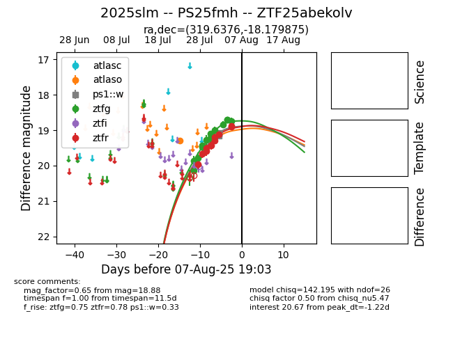

Target 2025slm at 2025-08-06 17:45, see:
FINK: fink-portal.org/2025slm
Lasair: lasair-ztf.lsst.ac.uk/objects/2025slm
ALeRCE: alerce.online/object/2025slm
TNS: wis-tns.org/object/2025slm
YSE: ziggy.ucolick.org/yse/transient_detail/2025slm
alt names
ZTF25abekolv (ztf,fink)
2025slm (tns,yse)
PS25fmh (panstarrs)
coordinates:
equatorial (ra, dec) = (319.6376,-18.17987)
galactic (l, b) = (31.5544,-40.43015)
photometry
last atlaso=19.29, ps1::w=19.10, ztfg=18.75, ztfr=18.88
1 atlaso, 4 ps1::w, 13 ztfg, 10 ztfr detections
